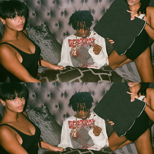
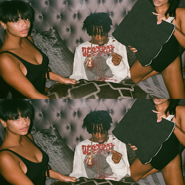
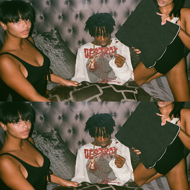
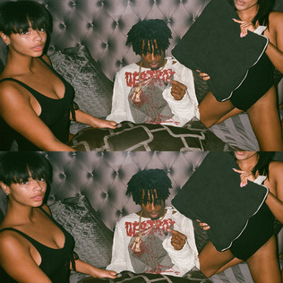
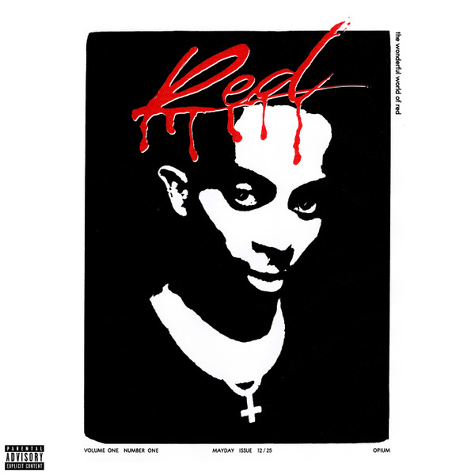

1996 – Birth in Atlanta
Jordan Terrell Carter was born on September 13, 1996, in Atlanta, Georgia. His Southern roots shaped his early exposure to streetwear, underground music, and non-mainstream sounds. These early experiences fueled the style he’d soon be famous for.
Early Teen Years – Sir Cartier Era
While still in high school, Carti began uploading music under the name “Sir Cartier.” He skipped school to focus on music and modeling, and experimented with sound on SoundCloud where he found his first audience.
2015 – Joining Awful Records
Collaborating with Father and the Awful Records crew gave Carti his first taste of the underground spotlight. His vibe-heavy delivery and fashion-forward persona started drawing cult followers.
2017 – Breakthrough Year
Signing with A$AP Mob and Interscope, Carti dropped his debut mixtape and became a viral sensation. “Magnolia” dominated the charts and the streets with its bass-heavy bounce and iconic line "In New York I Milly Rock..."
Playboi Carti is more than a rapper — he's a movement. Known for his experimental sound and iconic “baby voice,” he influenced a generation of artists. His music prioritizes mood, repetition, and vibes over deep lyricism — making it infectious and memorable.
Collaborating with icons like Lil Uzi Vert, Travis Scott, Kanye West, and more, Carti's style has inspired a new genre of rage-infused, punk-like trap music. His live shows are pure chaos — mosh pits, red lighting, and electric energy. His sound is now a blueprint for the underground and mainstream alike.
Playboi Carti (2017)
The self-titled debut mixtape exploded onto the scene with hits like "Magnolia" and "wokeuplikethis*". It introduced Carti’s aesthetic: minimal lyrics, hypnotic beats, and maximal energy. It became a SoundCloud classic and turned him into a household name.

Die Lit (2018)
A cult classic. With a punk-influenced vibe, *Die Lit* made Carti a legend among his fans. Songs like "Shoota," "R.I.P.," and "Long Time" made the album both chaotic and emotional. It influenced the aesthetics of hip-hop — from stage design to merch culture.

Whole Lotta Red (2020)
Dropped on Christmas, this album was unlike anything before it. With distorted beats, demonic energy, and punk-rock influence, it was divisive but visionary. WLR inspired a rage genre, echoed by artists like Ken Carson and Destroy Lonely.

MUSIC (2025)
Carti’s latest album dropped in early 2025 and takes everything further — industrial rage, vampy fashion, heavy bass. It’s considered his most polished yet raw work, blending digital distortion and futuristic sounds. Fans see this as a rebirth of Carti’s influence, already making waves on TikTok, festivals, and even fashion campaigns.